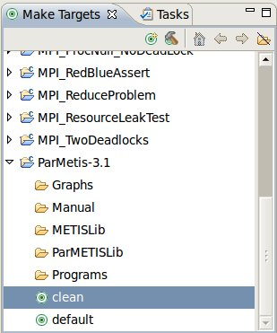
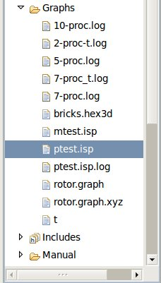
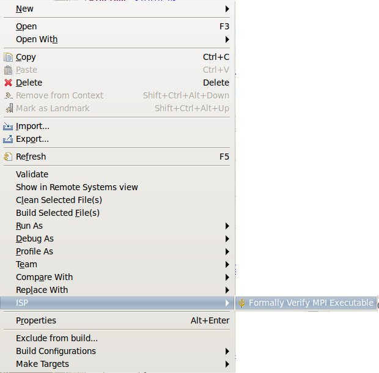

|
Makefile Support
|
The ISP plugin supports CDT Makefile projects with a minimum effort required on the part of the programmer.
Just some minor modifications to your project's Makefiles and you'll be able to run ISP on your Makefile
Projects as well as your Managed Build Projects.
Makefile Modification Steps
The following are the necessary procedures to modify your CDT Makefile Project so that it can be verified and
analyzed by the ISP plugin. If you are creating a project from scratch, make sure to start with a new Makefile Project
and not a Managed-Build Project!
-
Change the compiler to ispcc. This is a wrapper for mpicc that allow ISP's Profiler to intercept MPI calls at runtime
# Which compiler to use
# CC = mpicc
CC = ispcc
-
The ISP plugin requires the fully qualified path to all source code in order to do the code analyzing. ISP uses
the __FILE__ and __LINE__ macros in generating a runtime log. Your Makefiles will have to pass the source files to
ispcc (gcc) at compile time in order to get that back in the same form. This is accomplished by the following being
added to your Makefiles
SOURCEPATH = $(shell pwd) # define this this will grab the present working directory and store it
$(CC) $(CFLAGS) -c $(SOURCEPATH)/$*.c # add this to your build rules
-
Change the extension of the generated executables to ".isp"
$(BINDIR)/mtest.isp$(VERNUM): $(MESHTESTOBJS) $(ISPOBJS)
Setting Your Projects up to Build
-
Create make targets for your Makefile Project

-
Now simply double click the make target you need.
You may have to do a little debugging to get everything just right
Running ISP on the Generated Executables
-
Locate the executable(s) with ".isp" extension in the Project Explorer

-
Set the number of processes for the next run of ISP.
Find these instructions in the section in the corresponding section
of the Analyzer View Help page
-
Right click on an executable with ".isp" extension in the Project Explorer

-
This should bring up the Analyzer View if it isn't already, and then run ISP as it does in any Managed Build Project.
Please see the Analyzer View Help page from info.
Back to Top | Back to Table of Contents
School of Computing * 50 S. Central Campus Dr. Rm. 3190 * Salt Lake City, UT
84112 * isp-dev@cs.utah.edu
License